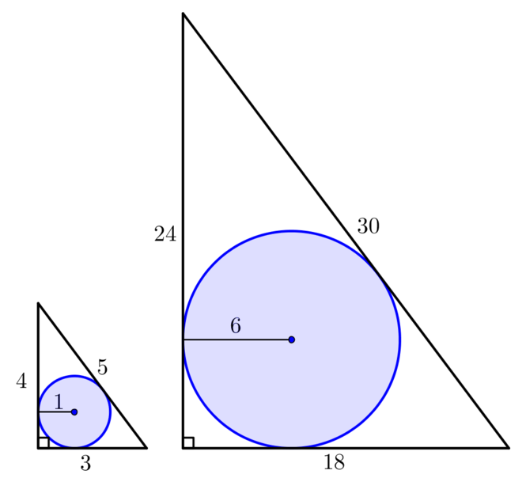

Can you find a right-angled triangle for which the inscribed circle has a radius of 6?
Is your solution unique?
In the solution we substituted the specific case of r=6 into our equations at a fairly early stage.
However, we might have asked ourselves, why r=6? What about other values of r? Presumably we can take the same approach for any radius but if we have to return to the early stages of working for each specific case that we want to consider then we aren’t being very efficient.
We may therefore have chosen not to substitute for r, but to work more generally.
We would have the two equations
c=a+b−2r(1)
and
c2=a2+b2(2)
from our earlier work and, as before, we can substitute for c in equation (2).
This would give
a2+b2=(a+b−2r)2
which can be expanded and then simplified to
b=2r(a−r)a−2r.
We could then simply substitute any given value of r into this formula and follow the same procedure of choosing a value for a in order to determine lengths b and c.
Alternatively, we may have chosen to think about the simplest case where r=1. Following through the same approach as before we have that
b=2(a−1)a−2.
Now, selecting a value for a will generate a solution to this simplest case, for example, if a=3 then we find that b=4 and c=5.
Notice that this is the smallest example of a Pythagorean Triple.
We can then use this simpler ‘base case’ to find a similar triangle with an inscribed circle of radius 6, we just need to multiply each length by the scale factor of 6, giving us a solution where a=18, b=24, and c=30, as shown below.

The idea of scaling is very powerful. By thinking about this one ‘base case’ we can very easily generate right-angled triangles for an inscribed circle of any given radius. In the examples illustrated below we have considered integer radii but of course we can also find similar triangles with inscribed circles which have non-integer radii too.
It is worth noticing that changing the selected value of a in our base case will generate another ‘family’ of solutions. If we refer back to the original problem, this is a way of demonstrating that there is not a unique right-angled triangle for an inscribed circle of a given radius.